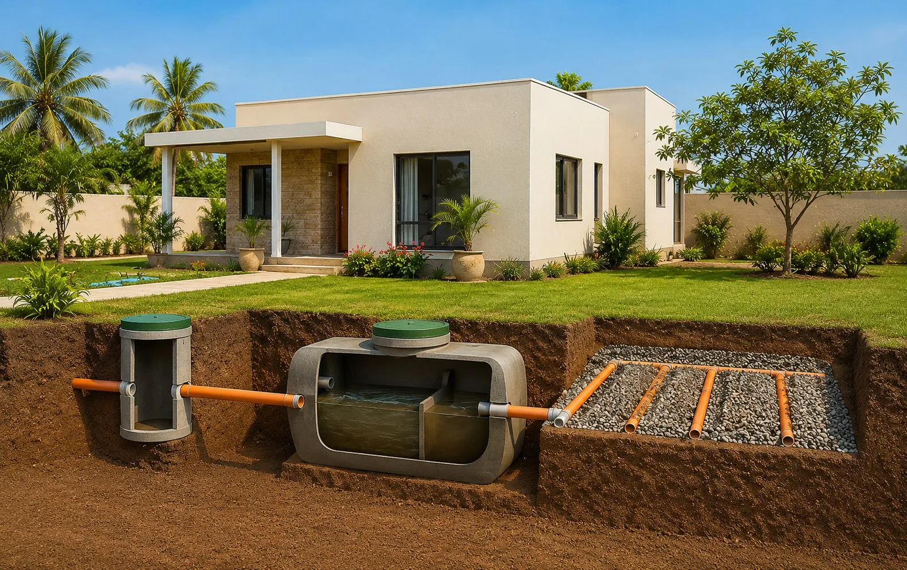
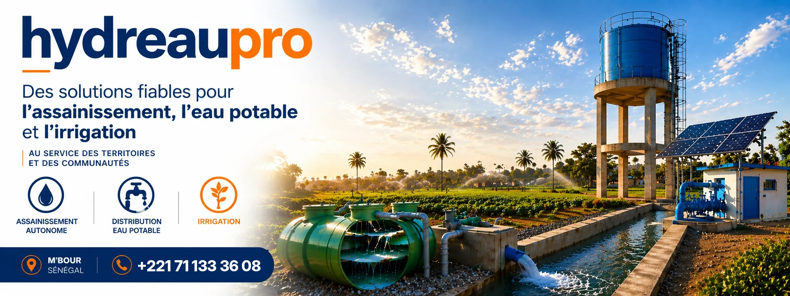
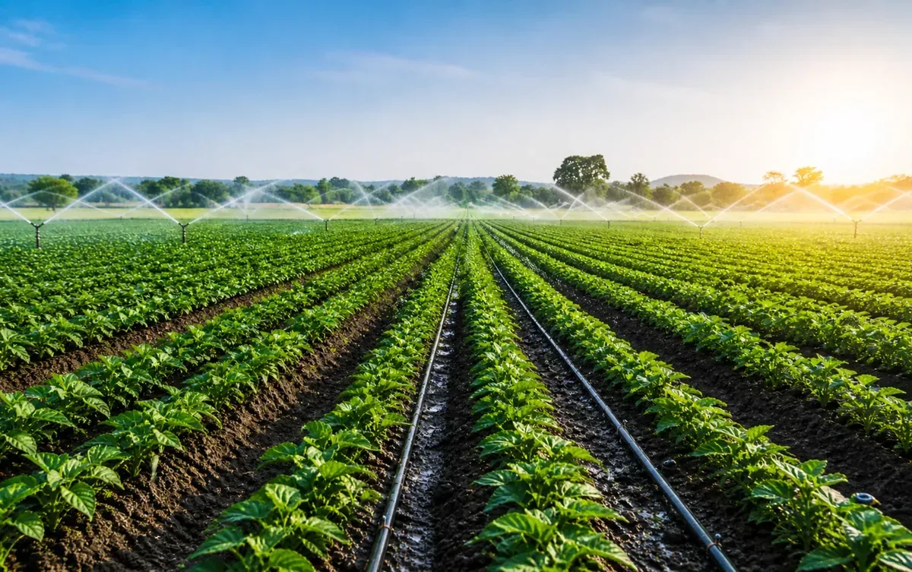
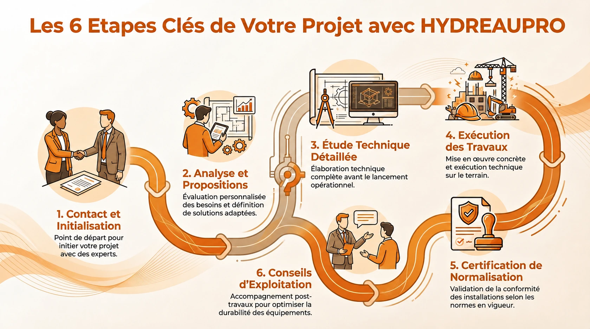

Assainissement autonome
Des solutions adaptées aux sites non raccordés au réseau collectif, avec une attention particulière portée à l’hygiène, à la durabilité et à la protection de l’environnement.
Découvrir la prestation
HYDREAUPRO accompagne les particuliers, les professionnels, les exploitants et les porteurs de projets en proposant des solutions techniques claires et parfaitement adaptées aux réalités du terrain au Sénégal. Afin de répondre efficacement à vos besoins, nous mettons à votre disposition notre savoir-faire à travers trois pôles d’expertise majeurs.

Des solutions adaptées aux sites non raccordés au réseau collectif, avec une attention particulière portée à l’hygiène, à la durabilité et à la protection de l’environnement.
Découvrir la prestation
Des systèmes conçus pour maintenir une pression constante, sécuriser le stockage et garantir une alimentation fiable en eau potable dans les bâtiments.
Découvrir la prestation
Des solutions d’irrigation pensées pour optimiser l’usage de l’eau, soutenir les cultures et améliorer la performance des installations.
Découvrir la prestationÉtablie à M’Bour, HYDREAUPRO se distingue par son expertise rigoureuse dans la gestion des ressources hydriques et des infrastructures sanitaires. Sa structure repose sur une méthodologie d’accompagnement personnalisé en six étapes.

Une présence humaine et professionnelle pour étudier les besoins, orienter les choix techniques et accompagner vos projets avec méthode.
Il accompagne les projets liés à l’assainissement, à la surpression d’eau potable et aux équipements techniques avec une approche rigoureuse et opérationnelle.
Il intervient dans l’analyse des besoins, la structuration des solutions et le suivi des projets pour apporter des réponses techniques cohérentes et adaptées au terrain.
Contactez-nous et nos équipes vous répondront dans les plus brefs délais.